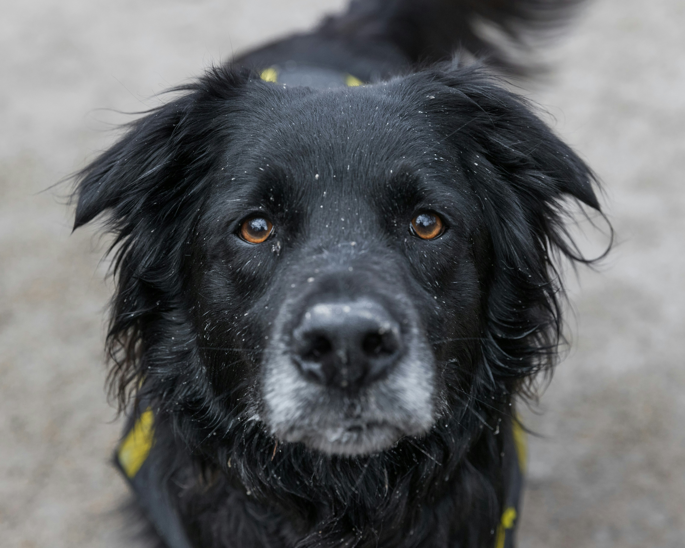

Achados e Perdidos
Brendo
Encontrado no bairro X, em 25/04.

Zola
Encontrado no bairro X, em 25/04.

Zorro
Encontrado no bairro X, em 25/04.
A Amahvet é uma clínica veterinária comprometida com o cuidado, a saúde e o bem-estar dos animais. Nosso diferencial é atuar também em causas sociais, oferecendo apoio a animais perdidos, promovendo reencontros e incentivando a adoção responsável.
Nosso time é formado por profissionais apaixonados por animais, e nosso espaço está preparado para acolher, cuidar e encaminhar cada pet com carinho e responsabilidade.
Colocamos o bem-estar animal em primeiro lugar, agindo com empatia e determinação para garantir conforto e segurança em qualquer circunstância. Prezamos pela excelência: atendimento humanizado, serviços de qualidade e preços justos, sempre alinhados com nossos princípios de ética e profissionalismo.
Acreditamos no poder transformador da conexão com nossos amigos de quatro patas — leais, sinceros e sempre presentes e valorizamos cada gesto: um rabo abanando, um arranhão de carinho ou uma mordida cheia de afeto. Sabemos que isso é amor em forma de instinto.
Encontrado no bairro X, em 25/04.
Encontrado no bairro X, em 25/04.
Encontrado no bairro X, em 25/04.

Fêmea, 2 anos, dócil e vacinada.
Macho, 3 anos, dócil e vacinado.
Fêmea, 2 anos, dócil e vacinada.
Para dúvidas, sugestões ou ajuda: Preencha o formulário abaixo